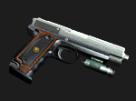
A arma básica do jogo, que o acompanha a partir do princípio. É considerava fraca, porém é muito útil para inimigos que estejam sozinhos e para poupar munição, já que balas para ela são encontradas aos montes.
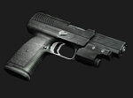
Uma versão melhorada da Handgun, que pode ser comprada ou conquistada de graça encontrar todos os medalhões azuis no desafio do Merchant. Seus grandes pontos positivos são o fato de suportar maior quantidade de munição, além de poder atravessar inimigos (piercing).
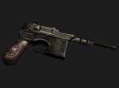
Uma arma de aspecto velho, de carregamento lento e poder muito alto. É a arma utilizada por Luis e pode ser comprada no Merchant por 14 mil pts durante o capítulo 2-2.Você pode comprar um stock específico para melhorar o manejo dessa pistola
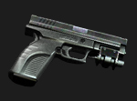
É menos potente que a Red 9, mas é melhor que as demais desse tipo. Suas vantagens são a alta velocidade de recarga e de tiro, tornando-a ideal para grupos de Ganados, por exemplo. Não costuma ser muito escolhida ao decorrer do jogo e pode ser comprada no Merchant por 24 mil pts no capítulo 3-1.
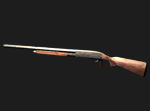
Leon a encontra na casa onde se refugia dos Ganados, logo ao entrar em Pueblo. Sua munição é comum, porém em quantidades moderadas. É extremamente potente quando se atira perto dos inimigos, mas perde muito em força quando o alvo está distante, o que pode ser melhorado com o upgrade especial. É ótima contra grupos e inimigos de grande porte, como Novistadores e o Dr. Salvador.
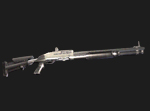
Uma versão melhorada da Shotgun que pode ser comprada a partir da entrada de Leon na área do castelo de Salazar, por 32 mil pts. Possui melhor poder em longa distância do que sua antecessora, mas, de resto, acaba ficando com as mesmas características da Shotgun.
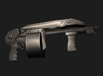
A última versão de Shotgun pode ser comprada no Merchant por 43 mil pts. É a melhor em praticamente todos os aspectos, exceto longa distância. Devido ao seu importante uso e grande munição, é normalmente carregada até o fim do game. Seu upgrade especial a confere até 100 balas carregadas.
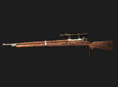
Uma versão simples à base de madeira, que acaba não sendo muito usada durante o jogo por pouca munição e longo tempo de carregamento entre um tiro e outro. Porém, sua mira acaba a tornando boa opção para certos chefes e inimigos que estejam distantes. Pode ser associado com uma mira telescópica (scope) para aumentar o alcance da mira, além do infrared scope, para visualização infravermelha (usado para enfrentar os Regeneradores). Comprada com o Merchant, a arma custa 12 mil pts.
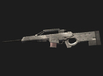
É uma versão melhorada do Rifle em todos os aspectos possíveis: poder e velocidade de fogo e de recarregamento. Ideal para chefes e inimigos distantes. Pode ser associado com uma mira telescópica (scope) para aumentar o alcance da mira, além do infrared scope, para visualização infravermelha (usado para enfrentar os Regeneradores). Ao ser comprada pelo Merchant a partir do capítulo 3-1, a arma custa 35 mil pts.
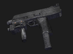
Uma arma automática, capaz de disparar vários tiros seguidamente com velocidade extremamente alta. Pode ser comprada com o Merchant logo no primeiro encontro, custando 15 mil pts. Não possui grande poder de fogo, mas é eficaz contra inimigos mais fracos ou para afastar grandes grupos. Pode ser associada a um stock específico, que melhora o manejo dessa arma.
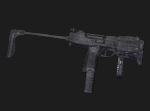
Arma exclusiva de HUNK no minigame Mercenaries. É muito semelhante à TMP do jogo normal, sendo uma arma muito rápida. É a única arma presente no inventário de HUNK, além de algumas granadas e Sprays.
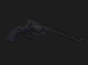
A primeira Magnum conquistada no jogo chega a ser bem efetiva contra inimigos de grande dificuldade, como alguns chefes. Seu poder é muito alto, porém a munição é rara e o carregamento pode comprometer a sua estratégia. Essa arma pode ser comprada com o Merchant a partir do capítulo 3-1 por 38 mil pts, mas também pode ser encontrada no castelo, na pequena sala trancada perto da fonte (você precisará da ajuda de Ashley para obtê-la).
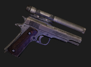
Homenageando um jogo através do nome, essa arma possui maior velocidade que a antecessora, porém fica devendo em poder de fogo e por não possuir upgrade especial. Também valem as mesmas regras: economize munição o máximo que puder. Pode ser comprada com o Merchant a partir do capítulo 5-1, custando 77.700 pts.
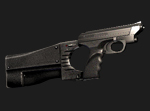
A poderosa Matilda só pode ser comprada após terminar o jogo uma vez. Não chega a ser muito forte, mas dispara 3 tiros por vez, sendo ideal para Ganados e outros monstros mais fracos. Com os upgrades, ela se torna uma arma que vale a pena de ser obtida, podendo chegar à capacidade de 100 balas e a uma alta velocidade.
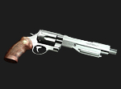
Em termos de potência, é a melhor arma possível de se ter no jogo, um verdadeiro “canhão de mão”, como o nome sugere. Pode ser comprada ao conquistar 5 estrelas com todos os personagens em cada cenário do modo Mercenaries, algo difícil, porém, que vale pelo resultado. Seus upgrades incluem poder de fogo elevadíssimo e até munição ilimitada.
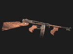
A arma mais poderosa: possui alto poder de fogo e munição ilimitada. Para possibilitar sua compra, é necessário terminar apenas o Assignment Ada (no caso do Game Cube) ou o Separate Ways (para a versão PS2) para tê-la com Leon. Para utilizá-la com Ada (apenas na versão PS2), termine o modo Assignment Ada.
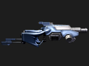
Arma ausente na versão GameCube, é habilitada ao finalizar o modo Professional e não precisa de munição. Tem um funcionamento bem diferenciado, sendo possível aplicar dois tipos do tiro. O primeiro é possível ser executado quando a barra de eletricidade atingir o nível mínimo, provocando um efeito semelhante ao da Flash Grenade, matando Plagas imediatamente. O segundo tiro é executado quando o nível de eletricidade está no máximo, disparando um raio capaz de matar a maioria dos inimigos instantaneamente.